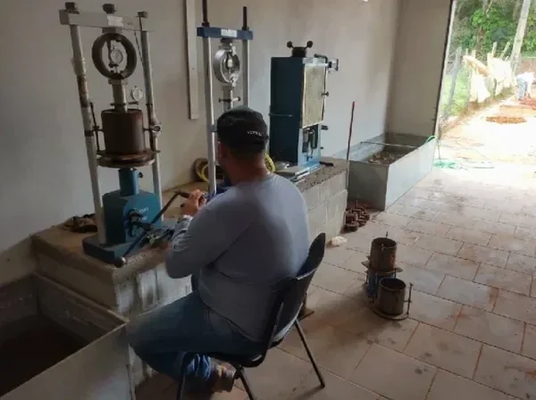

In unserem Prüflabor in Bremerhaven kommt ein servohydraulischer Rahmen mit einer Maximalkraft von 200 kN zum Einsatz, um den einaxialen Druckversuch (UCS) an zylindrischen Proben durchzuführen. Die Maschine ist mit einem digitalen Messsystem ausgestattet, das die Last und Verformung kontinuierlich aufzeichnet. Für die Probenvorbereitung verwenden wir einen Kernbohrstand mit Diamantbohrkrone, um ungestörte Zylinder mit einem Durchmesser von 50 mm und einem Höhen-Durchmesser-Verhältnis von 2:1 herzustellen. Vor der Prüfung lagern wir die Proben in einer Klimakammer bei kontrollierter Feuchte, um die natürlichen Bedingungen des Bodens in Bremerhaven zu simulieren. Ergänzend zum UCS führen wir oft eine Klassifikation der Böden durch, um die Probe genau zu charakterisieren.

Die undrainierte Scherfestigkeit aus dem UCS ist der zentrale Parameter für die Dimensionierung von Flachgründungen in den weichen, wassergesättigten Tonen der Wesermarsch.
Methodik und Umfang
Lokale Besonderheiten
Die historische Bebauung Bremerhavens, insbesondere die Hafenerweiterungen im 19. Jahrhundert, erfolgte oft auf weichen, organischen Tonen und Kleiablagerungen. Diese Schichten weisen eine sehr geringe einaxiale Druckfestigkeit auf, was bei Neubauten in den alten Hafenbereichen zu Setzungsdifferenzen führen kann. Ohne einen normgerechten einaxialen Druckversuch (UCS) wird das Tragverhalten dieser Böden häufig überschätzt. Wir haben mehrfach erlebt, dass bei Altlastenverdachtsflächen der UCS erst die tatsächliche Festigkeit der Auffüllungen offenlegt. Daher ist die Prüfung nach DIN EN ISO 17892-7 für jedes Bauvorhaben in den tiefer gelegenen Stadtteilen unverzichtbar.
Benötigen Sie eine geotechnische Bewertung?
Antwort innerhalb von 24h.
E-Mail: kontakt@geotechnik.sbsGeltende Normen
DIN EN ISO 17892-7 (Geotechnische Erkundung und Untersuchung – Laborversuche an Bodenproben – Teil 7: Einaxialer Druckversuch), DIN 18136/D2166M-16 (Standard Test Method for Unconfined Compressive Strength of Cohesive Soil), DIN 4020 (Geotechnische Untersuchungen für bautechnische Zwecke – Ergänzende Regelungen zu DIN EN 1997-2)
Zugehörige Fachleistungen
Einaxialer Druckversuch (UCS) nach DIN EN ISO 17892-7
Durchführung des UCS an ungestörten Zylinderproben aus Kernbohrungen oder Stechzylindern. Inklusive Probenvorbereitung, Prüfung bei definierter Verformungsrate und Auswertung der Bruchlast. Die Ergebnisse werden als Prüfbericht mit Angabe von qu, cu und Bruchdehnung dokumentiert.
Kombinierte Laboruntersuchung: UCS + Konsolidation
Erweiterte Analyse für weiche bindige Böden in Bremerhaven. Zusätzlich zum einaxialen Druckversuch führen wir einen Konsolidationsversuch nach DIN EN ISO 17892-5 durch, um das Setzungsverhalten unter Last zu prognostizieren. Ideal für Fundamente in den wassergesättigten Tonen der Wesermarsch.
Typische Parameter
Häufige Fragen
Welche Probenqualität wird für den einaxialen Druckversuch (UCS) in Bremerhaven benötigt?
Für den UCS benötigen wir ungestörte Zylinderproben (UDS) mit einem Durchmesser von mindestens 50 mm und einer Höhe, die dem doppelten Durchmesser entspricht. Die Proben müssen in einem dichten Behälter transportiert werden, um Austrocknung zu vermeiden. In Bremerhaven empfehlen wir, die Proben innerhalb von 24 Stunden nach der Entnahme ins Labor zu bringen, da die weichen Tone bei längerer Lagerung ihre Festigkeit verändern.
Wie lange dauert die Durchführung eines UCS und die Ergebnisbereitstellung?
Die reine Prüfdauer beträgt etwa 30 bis 60 Minuten pro Probe, abhängig von der Bruchdehnung. Die Probenvorbereitung (Zuschneiden, Vermessen) nimmt zusätzlich 15–30 Minuten in Anspruch. Den vollständigen Prüfbericht erhalten Sie in der Regel innerhalb von 3 bis 5 Werktagen nach Probeneingang in unserem Labor in Bremerhaven.
Welche Normen gelten für den einaxialen Druckversuch in Deutschland?
In Deutschland ist der einaxiale Druckversuch nach DIN EN ISO 17892-7 geregelt. Ergänzend gilt die DIN 4020 für die geotechnische Untersuchung. Für internationale Projekte oder wenn der Auftraggeber es fordert, führen wir die Prüfung auch nach DIN 18136 durch. In unserem Labor arbeiten wir nach beiden Normen.
Was kostet ein einaxialer Druckversuch (UCS) in Bremerhaven?
Die Kosten für einen einaxialen Druckversuch liegen in Bremerhaven zwischen 300 und 450 Euro pro Probe, abhängig von der Probenanzahl und dem Aufwand für die Probenvorbereitung. Bei größeren Serien oder Kombination mit anderen Versuchen gewähren wir einen Mengenrabatt. Bitte fordern Sie ein individuelles Angebot an.